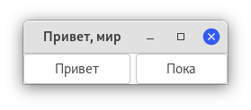
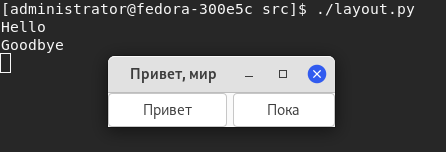
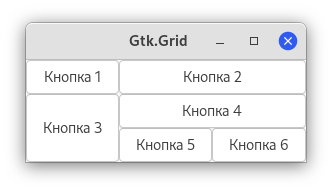

Контейнеры макета
В то время как многие наборы инструментов GUI требуют, чтобы вы точно размещали виджеты в окне, используя абсолютное позиционирование, GTK+ использует иной подход. Вместо того, чтобы указывать положение и размер каждого виджета в окне, вы можете расположить свои виджеты в строках, столбцах и/или таблицах. Размер вашего окна может быть определён автоматически на основе размеров содержащихся в нём виджетов. И размеры виджетов, в свою очередь, определяются объёмом текста, который они содержат, или минимальными и максимальными размерами, которые вы установили, и/или тем, как вы запросили, чтобы доступное пространство было разделено между наборами виджетов. Вы можете улучшить свой макет, указав расстояние заполнения и значения центрирования для каждого из виджетов. Вы можете улучшить свой макет, указав расстояние заполнения и значения центрирования для каждого из виджетов. GTK+ затем использует всю эту информацию, чтобы разумно и плавно изменять размер и положение всего, когда пользователь манипулирует окном.
GTK+ упорядочивает виджеты иерархически, используя контейнеры. Они невидимы для конечного пользователя и вставляются в окно или перемещаются друг в друга для компонентов макета. Есть два вида контейнеров: контейнеры с одним дочерним элементом, которые являются потомком Gtk.Bin, и контейнеры с несколькими дочерними элементами, которые являются потомками Gtk.Container. Чаще всего используются горизонтальные или вертикальные блоки (Gtk.Box) и сетки (Gtk.Grid).
Блоки (boxes)
Блоки - это невидимые контейнеры, в которые можно упаковать виджеты. При упаковке виджетов в горизонтальный блок объекты вставляются горизонтально слева направо или справа налево в зависимости от того, используется ли Gtk.Box.pack_start() или Gtk.Box.pack_end(). В вертикальном поле виджеты упакованы сверху вниз или наоборот. Вы можете использовать любую комбинацию блоков внутри или рядом с другими ячейками для создания желаемого эффекта.
Пример
Посмотрим на слегка изменённую версию расширенного примера с двумя кнопками.

#!/bin/python3
import gi
gi.require_version("Gtk", "3.0")
from gi.repository import Gtk
class MyWindow(Gtk.Window):
def __init__(self):
super().__init__(title="Привет, мир")
self.box = Gtk.Box(spacing=6)
self.add(self.box)
self.button1 = Gtk.Button(label="Привет")
self.button1.connect("clicked", self.on_button1_clicked)
self.box.pack_start(self.button1, True, True, 0)
self.button2 = Gtk.Button(label="Пока")
self.button2.connect("clicked", self.on_button2_clicked)
self.box.pack_start(self.button2, True, True, 0)
def on_button1_clicked(self, widget):
print("Hello")
def on_button2_clicked(self, widget):
print("Goodbye")
win = MyWindow()
win.connect("destroy", Gtk.main_quit)
win.show_all()
Gtk.main()
Вывод в терминал будет таким:

Сначала создаётся горизонтально ориентированный контейнер-бокс, в котором между дочерними элементами размещается 6 пикселей. Этот блок становится дочерним элементом окна верхнего уровня:
self.box = Gtk.Box(spacing=6)
self.add(self.box)
После чего помещаем две кнопки в контейнер бокса:
self.button1 = Gtk.Button(label="Привет")
self.button1.connect("clicked", self.on_button1_clicked)
self.box.pack_start(self.button1, True, True, 0)
self.button2 = Gtk.Button(label="Пока")
self.button2.connect("clicked", self.on_button2_clicked)
self.box.pack_start(self.button2, True, True, 0)
В то время как в Gtk.Box.pack_start() виджеты располагаются слева направо, Gtk.Box.pack_end() располагает их справа налево.
Сетки (grid)
Gtk.Grid - это контейнер, в котором дочерние виджеты располагаются в строках и столбцах, но вам не нужно указывать параметры в конструкторе. Потомки добавляются с помощью Gtk.Grid.attach(). Они могут охватывать несколько строк или столбцов. Метод Gtk.Grid.attach() принимает пять параметров:
- Параметр
child- это добавляемыйGtk.Widget; left- это номер столбцаtopуказывает номер строки, к которой нужно прикрепить верхнюю часть элементаchild;widthиheightуказывают количество столбцов, которые будут охватывать элементchild, и кол-во строк, которые будут охватывать этот элемент, соответственно.
Также можно добавить новый дочерний элемент рядом с существующим дочерним, используя Gtk.Grid.attach_next_to(), который также принимает пять параметров:
child- это добавляемыйGtk.Widget, как указано выше;sibling- это существующий дочерний виджетself(экземплярGtk.GridилиNone. Виджетchildбудет размещён рядом с одноуровневым элементом или, если одноуровневый виджетsiblingasNone, в начале или конце сетки.
Наконец, Gtk.Grid можно использовать как Gtk.Box, просто используя Gtk.Grid.add(), который замещает дочерние элементы рядом друг с другом в направлении, определяемым свойством "orientation" (по умолчанию Gtk.Orientation.HORISONTAL.
Пример

#!/bin/python3
import gi
gi.require_version("Gtk", "3.0")
from gi.repository import Gtk
class GridWindow(Gtk.Window):
def __init__(self):
super().__init__(title="Grid Example")
button1 = Gtk.Button(label="Button 1")
button2 = Gtk.Button(label="Button 2")
button3 = Gtk.Button(label="Button 3")
button4 = Gtk.Button(label="Button 4")
button5 = Gtk.Button(label="Button 5")
button6 = Gtk.Button(label="Button 6")
grid = Gtk.Grid()
grid.add(button1)
grid.attach(button2, 1, 0, 2, 1)
grid.attach_next_to(button3, button1, Gtk.PositionType.BOTTOM, 1, 2)
grid.attach_next_to(button4, button3, Gtk.PositionType.RIGHT, 2, 1)
grid.attach(button5, 1, 2, 1, 1)
grid.attach_next_to(button6, button5, Gtk.PositionType.RIGHT, 1, 1)
self.add(grid)
win = GridWindow()
win.connect("destroy", Gtk.main_quit)
win.show_all()
Gtk.main()
ListBox
Gtk.ListBox - это вертикальный контейнер, содержащий дочерние элементы Gtk.ListBoxRow. Эти строки можно динамически сортировать и фильтровать, а заголовки можно добавлять динамически в зависимости от содержимого строки. Он так же позволяет осуществлять навигацию и выбор с помощью клавиатуры и мыши, как в обычном списке.